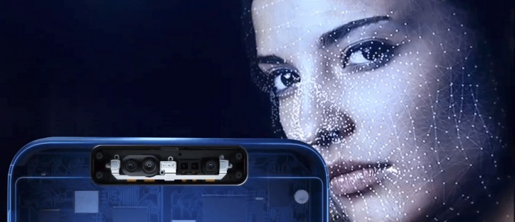
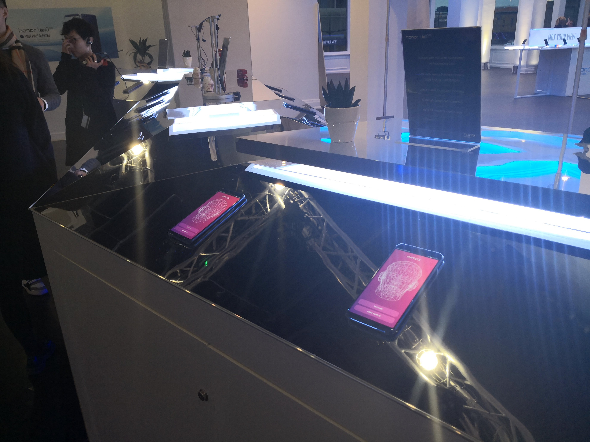
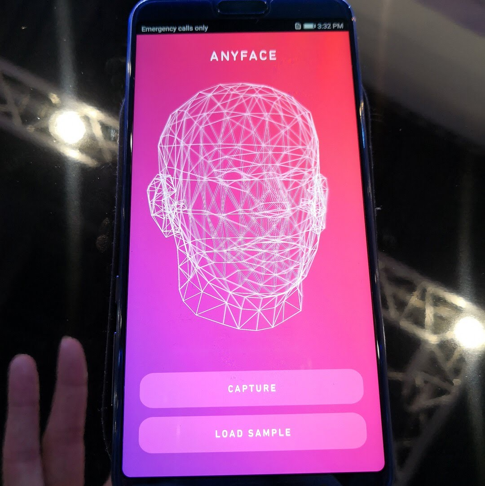
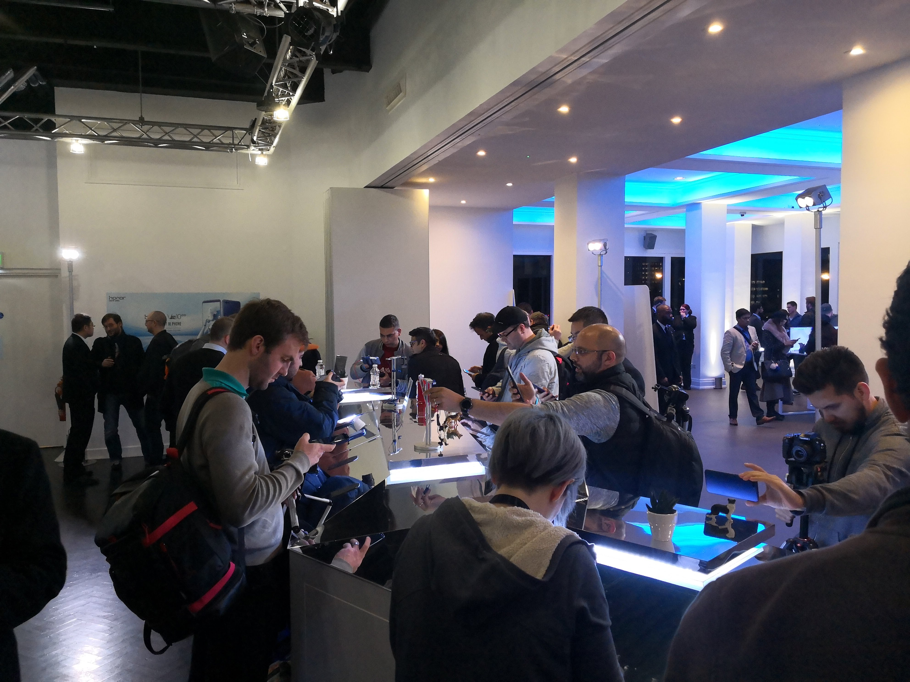
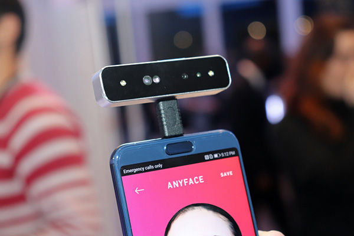
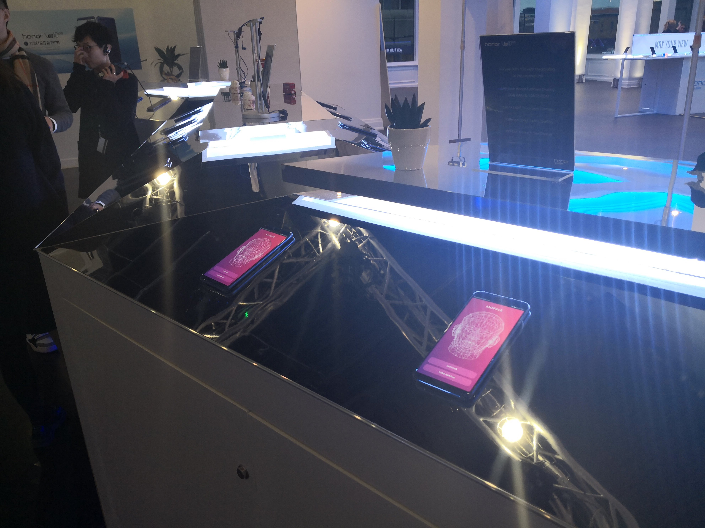
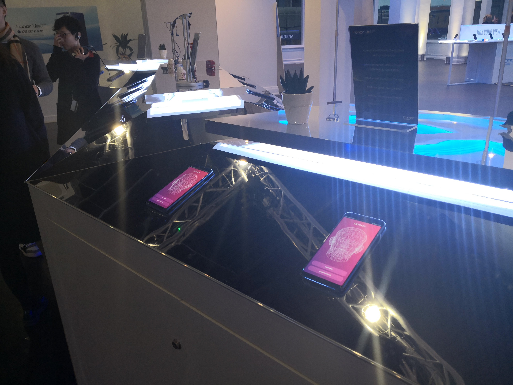

ANYFACE

ANYFACE is the demo app of auto facial rigging technology from scanned facial geometry. This app was demonstrated at Honor V10 launch conference at London in Dec. 2017.
Launch Event
We demonstrated the app at hands-on booth for media.
Gallery

 

Scanning Demo
This is the first 3D scanning demo using depth sensor on smartphone in the world. This technology will be released as
3D LIVE MAKER
next year.
Media
notebookitalia: "Il face unlock del futuro di Huawei. Nella notch di Huawei P11?" [
Link
]
Tech Zilla: "Honor View 10 (a.k.a.) Honor V10 Unboxing - First Impressions - Hands On" [
Link
]
Reviewestate: "Honor V10 Smartphone With Artificial Intelligence, Face ID And More" [
Link
]
 
